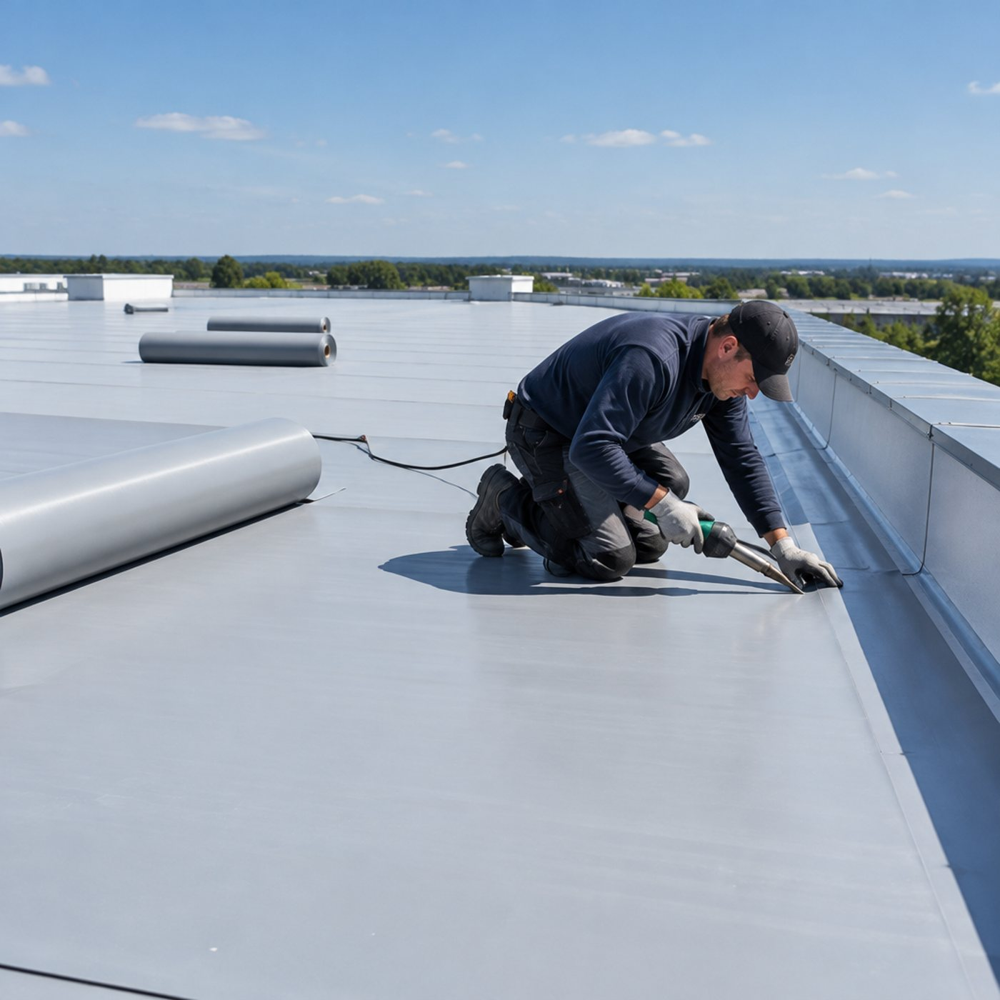
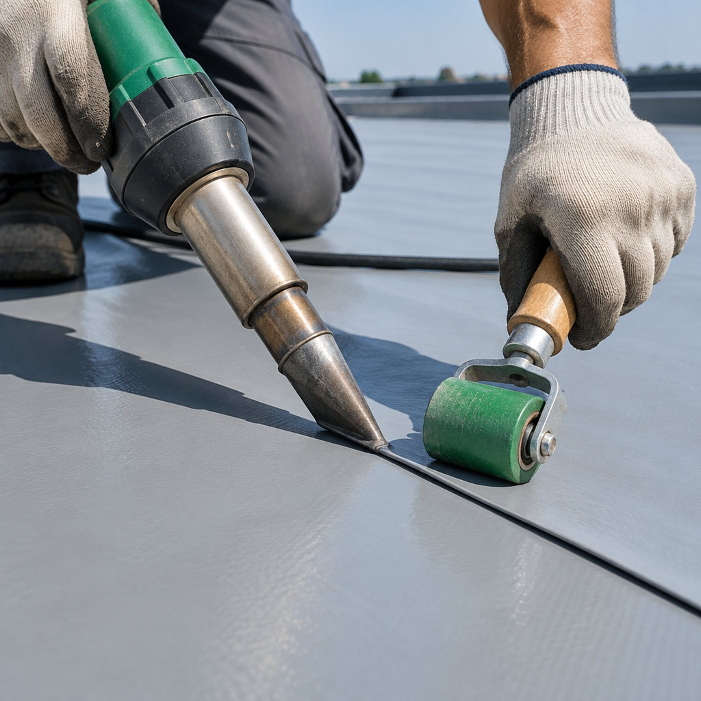

Плоская кровля из ПВХ мембраны — горячая сварка, а не клей
Монтаж плоской кровли «под ключ»: пароизоляция, утеплитель, мембрана, примыкания. Производство, склады, частные дома. Ремонт и устранение протечек. Работаем по всей РБ.
Что делаем
Три задачи: новое покрытие, ремонт и поиск протечки. Всё на ПВХ мембране.
Монтаж под ключ
Основание, пароизоляция, утеплитель, мембрана, примыкания. Один подрядчик на весь пирог.

Горячая сварка швов
Шов сваривается горячим воздухом и проверяется щупом. Клей на плоской кровле — ненадёжно.

Примыкания и узлы
Парапет, воронки, выходы на кровлю, деформационные швы: самые частые места протечек.
Ремонт кровли
Локальные заплатки, ремонт швов, замена участков, ремонт примыканий.
Поиск протечек
Смотрим швы, примыкания, воронки и механические повреждения. Объясняем причину.
Обслуживание
Периодический осмотр и очистка воронок: дешевле, чем аварийный ремонт.
Сколько полос и швов на вашей кровле
Введите размеры: покажу раскладку полос, длину сварных швов, число рулонов и ориентир по стоимости работ.
Считаю по геометрии: нахлёст 100 мм на шов, припуск 150 мм на примыкания, рулон 20 м. Точные цифры — после замера.
Прайс
Одна честная строка вместо двадцати «звоните»: монтаж кровли «под ключ» — 30 р. за 1 м².
В стоимость входят работы по монтажу. Материалы, подъём, демонтаж старого покрытия и ремонт основания считаются отдельно — говорим это до начала, а не после.
Кровля течёт не там, где лежит полотно
Почти все протечки — в узлах: парапет, воронка, примыкание, шов. Поэтому узлам на объекте отдаём столько же времени, сколько полю.
Примыкание к парапету
Галтель 45°, мембрана заводится на 150 мм, край под прижимную планку и герметик.
Воронка и уклон
Фланец приваривается к полотну, уклон к воронке от 2%, чтобы вода уходила сама.
Ещё два узла — на странице «Узлы».
Как идёт работа
Частые вопросы
Почему ПВХ мембрана, а не рубероид?
Мембрана сваривается в сплошное полотно, а не клеится. Шов получается монолитнее самого полотна — на рубероиде так не выходит.
Что значит «горячая сварка»?
Края полос прогреваются горячим воздухом и прикатываются роликом: получается сварной шов. Механическая прочность шва проверяется щупом.
Сколько стоит 30 р. за м²?
Это прайсовая цена монтажа «под ключ». Материалы и подготовка основания считаются отдельно — итог зависит от состояния кровли.
Работаете за пределами Минского района?
Да, работаем по всей РБ. Скажите адрес и площадь — посчитаем с выездом.
Ремонтируете чужую кровлю?
Да: находим протечку, делаем локальный ремонт или перевариваем швы. Часто дешевле, чем перекрывать всё.
Какая гарантия?
Гарантия на работы. Условия зависят от объёма и состояния основания и фиксируются до начала.
Пришлите размеры кровли — посчитаю раскладку
Длина и ширина, тип объекта, есть ли воронки и парапет. Ответ — с полосами, швами и ориентиром по цене.